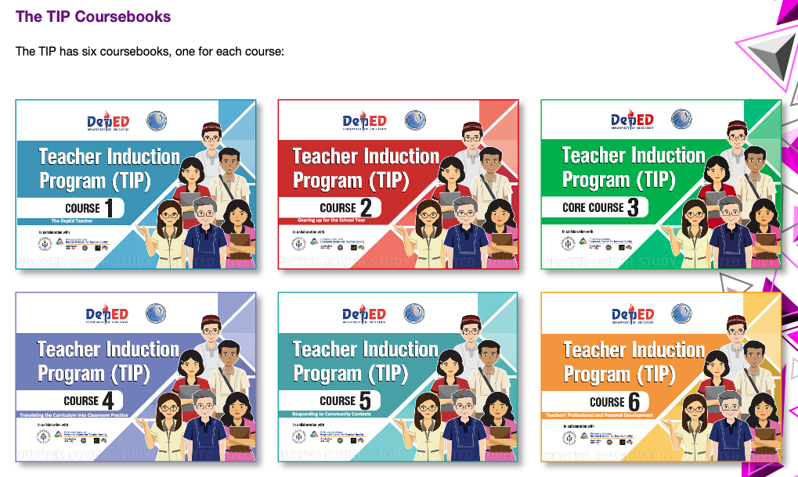

| Years | Activity | Target Pax |
|---|---|---|
| Year 1 | Accomplish the 6 Coursebooks with Coaching & Mentoring | Teachers with 0-3 year of experience |
| Year 2 | Coaching and mentoring, Learning Action Cells, INSET | Teachers with 0-2 years of experience |
| Year 3 | Coaching and mentoring, Learning Action Cells, INSET | Teachers with 0-1 years of experience |
Learning Outcomes
At the end of the IPBT, new teachers are expected to
Target Participants
The profile of this new teachers in DepEd is as follows:
Download the IPBT Coursebook here via NEAP Manage Drive
IPBT Coursebooks| Coursebook | Title | Modules | Ideal Duration |
|---|---|---|---|
| Coursebook 1 | Becoming a DepEd Teacher |
|
8 hours over a period of 2 months |
| Coursebook 2 | Professional Responsibilities |
|
5 hours over a period of 2 months |
| Coursebook 3 | The Philippine Professional Standards for Teachers and Its Aligned Systems and Tools |
|
6 hours over a period of 1 month |
| Coursebook 4 | Responding to Community Contexts |
|
4 hours over a period of 3 months |
| Coursebook 5 | The DepEd Teacher |
|
4 hours over a period of 1 month |
| Coursebook 6 | Teachers' Professional and Personal Development |
|
5 hours over a period of 2 months |

Please answer the Profile of Beginning Teachers to record your start of Coursebook 1
Mentor and School Head shall accomplish the M&E Forms and submit to SGOD-HRDS
| Name of Form | Accomplished by | Submitted / Given to | Link |
|---|---|---|---|
| Course Completion Certificate | Assigned Mentor | Beginnig Teacher | Download |
| M & E Form for Mentors | Assigned Mentor | School Heads | Download |
| M & E Form for School Heads | School Heads | SGOD-Human Resource Development Section | Download |